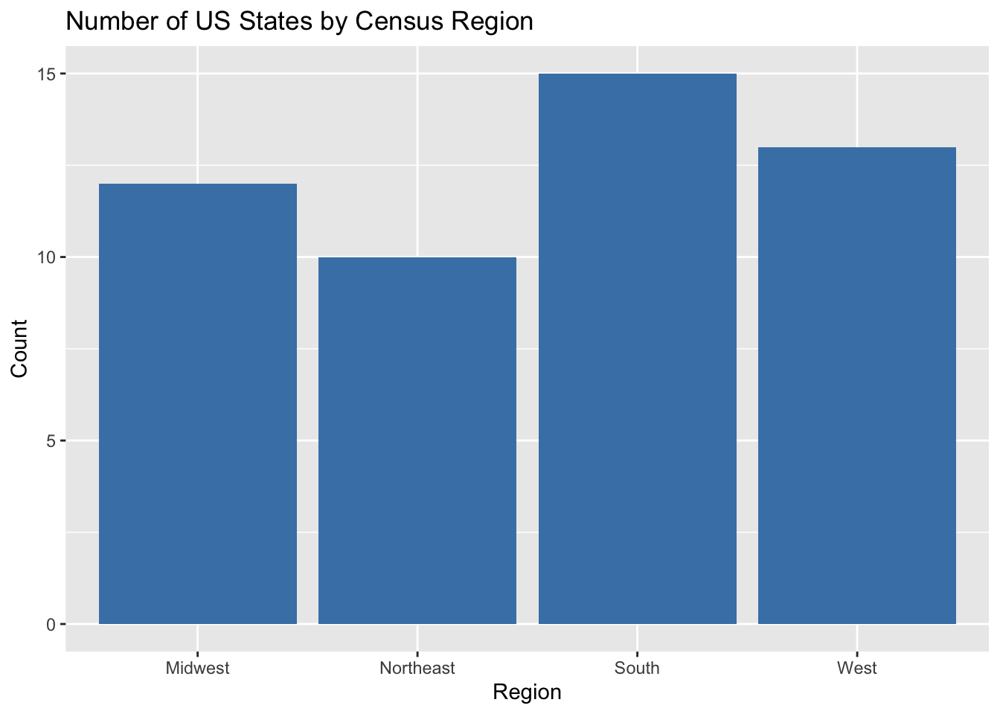
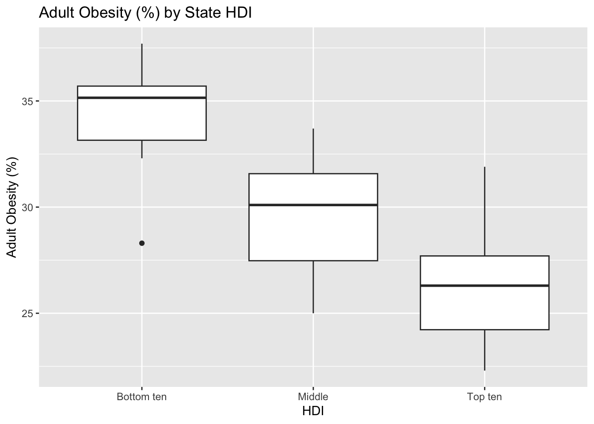
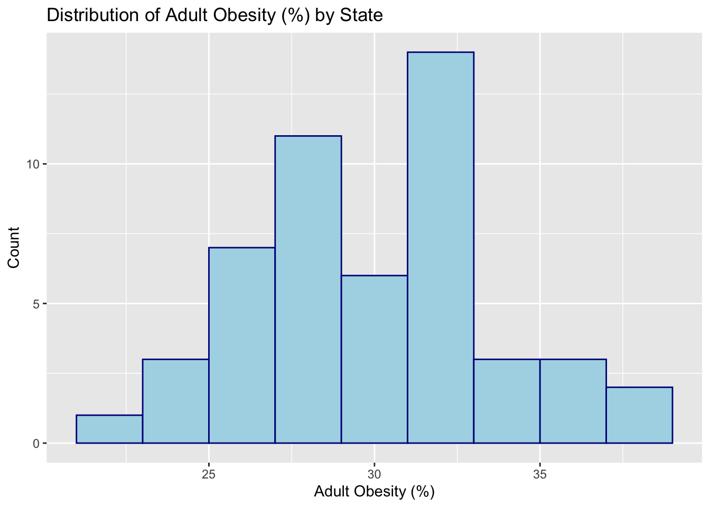
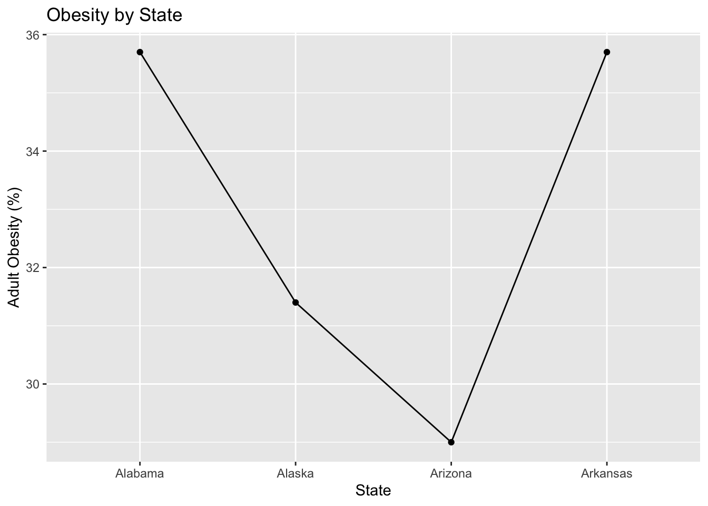
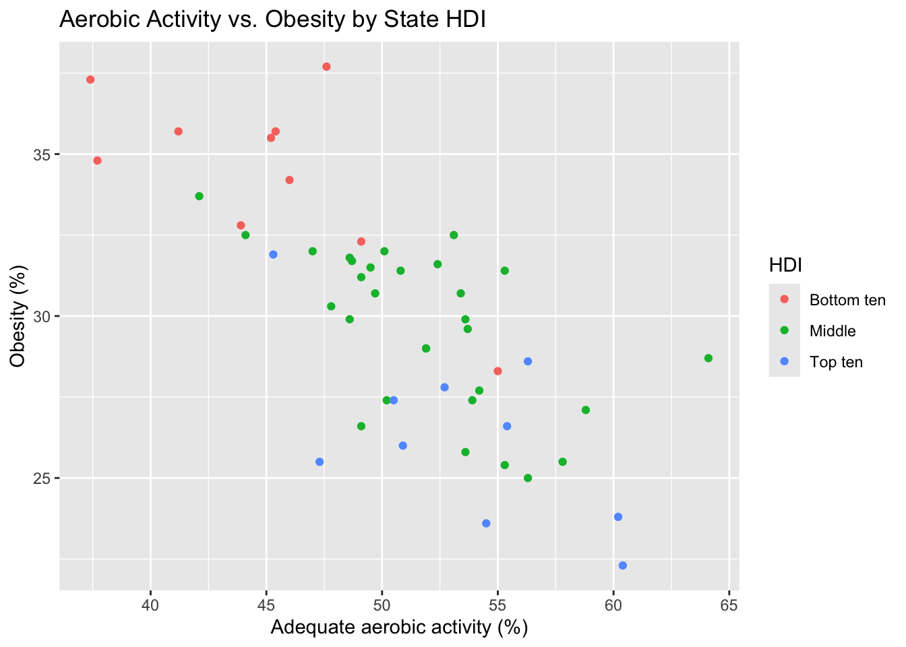
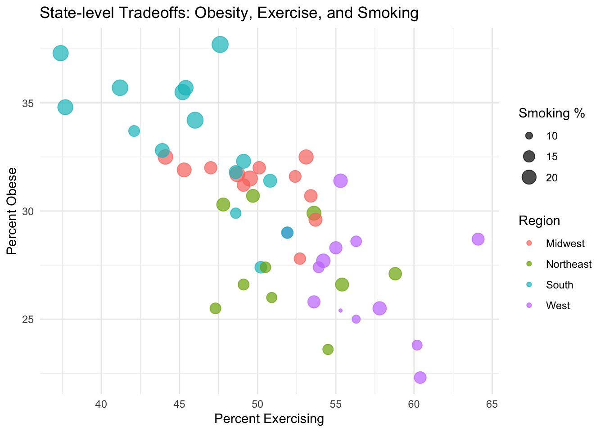

cdc <- read.csv("https://aggreenbean.github.io/Bios600/labs/data/cdc_cleaned.csv")Lab 02: Basic Data Visualization & Data Wrangling
Due Monday, Jun 29 at 11:59pm.
Set up
In Canvas, you’ll find the template for this assignment (“Lab 01 Template”). Download the file and open it.
Save it in your class project folder as “
lab-01.qmd”.Open the document. Replace “Your Name Here” with your name in the YAML (the header of the document). Also, replace “Today’s Date Here” with today’s date.
Note the R chunks
In opening the lab template, note the R chunks. The beauty of .qmd documents is that we can directly run code in them, and the outputs will appear in your final document. To do that, we create an R chunk, which you will see in your template as gray areas where you can write R code. The R code in chunks will be evaluated and displayed in the final rendered document.
Note that the rendering environment from R chunks and the Console are separate. This means that if you load a dataset in the Console, it will not be available in R chunks unless you also load it into R chunks.
Similarly, if you load in a dataset in the R chunk and render the document, the dataset will be in the R chunk environment, but will not exist in the Console. Thus, if you wish to load in a dataset and use it for displaying results in your final rendered document, the dataset must be loaded into an R chunk regardless of whether you have already loaded it into the Console.
The tidyverse
As mentioned previously, one of the biggest strengths of R is its large userbase who have contributed user-written functions to R via packages. R packages are “add-ons” to the basic functions available in R (think of them as apps on a phone).
The
tidyverseis a collection of packages designed around a common grammar and data structure.Some packages in the tidyverse that we will be using throughout this semester will be
ggplot2, used for creating graphics and figures, anddplyrandtidyr, used for data manipulation and wrangling.
Loading the CDC dataset
Once again, let’s load the cdc dataset. Enter the following command into the console for now (you can directly copy/paste it, but make sure everything is exactly as below):
First, install the tidyverse package by running the following code in your R Studio console:
install.packages("tidyverse")After installing the tidyverse package, you never have to install it again on your device – all that is needed to use functions from the tidyverse is to load the package once per R session using the following code:
- (This code is already written for you in an R chunk in your template. To run the chunk, click the green arrow at the upper right corner of the chunk. The data will also be loaded in at the same time.)
library(tidyverse)── Attaching core tidyverse packages ──────────────────────── tidyverse 2.0.0 ──
✔ dplyr 1.1.4 ✔ readr 2.1.5
✔ forcats 1.0.0 ✔ stringr 1.5.1
✔ ggplot2 3.5.2 ✔ tibble 3.3.0
✔ lubridate 1.9.4 ✔ tidyr 1.3.1
✔ purrr 1.1.0
── Conflicts ────────────────────────────────────────── tidyverse_conflicts() ──
✖ dplyr::filter() masks stats::filter()
✖ dplyr::lag() masks stats::lag()
ℹ Use the conflicted package (<http://conflicted.r-lib.org/>) to force all conflicts to become errorsNotice that by default, R automatically prints extra information about the package that was just loaded. You’ll want to hide this information in your assignments to make them neater. In the next section, we’ll find out how to do so.
Code Chunk Options
When you write code in Quarto, you put it inside code chunks. These chunks can have options that control how the code runs and what shows up in the final document.
Some of the most useful options are:
label – a short name you give each chunk. Helps organize your document and makes it easier to debug if there’s an error.
- Every chunk in your assignment should have a unique, descriptive label (e.g. setup, load-data, summary-stats, plot1).
warning – controls whether R warnings are shown in the output. - By default, R will print warnings (e.g., “package is built under a different R version”). To keep your document neat, set warning = FALSE if you don’t want those to print.
message – controls whether messages are shown. For example, when you load tidyverse, R prints a lot of startup messages. You don’t need those in your assignment, so set message = FALSE.
NoteFormatting
On this assignment and all HW/Labs going forward, there will be a “Formatting” portion of the grading rubric. To earn full points, you should ensure there are no messages, warnings, or lengthy code output printed in your document. To do this, be sure to set message = false and warning = false in your code chunks where you load packages/data. This is a good practice to prepare you to work with collaborators in the future!
In your Quarto template, find the chunk that loads in the CDC dataset. Which options are used in this chunk?
So, what’s the difference between library and install.packages?
A baking analogy: Imagine you want to bake a cake. You need to get the necessary kitchen gadgets in order to bake the cake. install.packages() is like going to the store and buying a KitchenAid mixer. library is like taking the KitchenAid mixer out of the pantry to actually bake the cake. When you want to bake another cake in 2 weeks, all you need to do is take the KitchenAid out of the pantry (you don’t need to buy another one). Similarly, you only need to run install.packages() once per machine, per package. Then, every time you use a package, simply “activate” it using library().
A quick note before we get started
Remember that the console and the Quarto document have different workspaces. If you load the tidyverse package in your console, it won’t be loaded into the workspace for the Quarto document. In the lab template, code for loading the tidyverse has already been provided. However, note that you must have the package installed first.
Also, it’s good practice to render often after making small changes to your document. This way, you can ensure you fix any coding issues as they arise.
Basic data manipulation
First, let’s take a glimpse of the dataset by running the following code in the console:
glimpse(cdc)Rows: 50
Columns: 17
$ X <int> 1, 2, 3, 4, 5, 6, 7, 8, 9, 10, 11, 12, 13, 14, 15,…
$ State <chr> "Alabama", "Alaska", "Arizona", "Arkansas", "Calif…
$ Region <chr> "South", "West", "West", "South", "West", "West", …
$ HDI <chr> "Bottom ten", "Middle", "Middle", "Bottom ten", "M…
$ InfantMortalityRate <dbl> 8.7, 6.7, 6.1, 7.5, 4.3, 4.8, 4.8, 6.7, 6.1, 7.5, …
$ CVDeathRate <dbl> 229.7, 154.1, 138.8, 223.2, 145.6, 128.4, 147.8, 1…
$ DrugDeathRate <dbl> 15.7, 16.0, 19.0, 13.8, 11.3, 15.4, 22.1, 22.0, 16…
$ MotorDeathRate <dbl> 17.5, 8.8, 13.1, 17.8, 8.1, 10.0, 7.4, 13.3, 14.5,…
$ CancerDeathRate <dbl> 175.6, 159.8, 141.3, 185.4, 142.8, 134.4, 146.2, 1…
$ Obesity <dbl> 35.7, 31.4, 29.0, 35.7, 25.0, 22.3, 26.0, 30.7, 27…
$ Smoking <dbl> 21.5, 19.0, 14.7, 23.6, 11.0, 15.6, 13.4, 17.7, 15…
$ Exercise <dbl> 45.4, 55.3, 51.9, 41.2, 56.3, 60.4, 50.9, 49.7, 50…
$ Seatbelt <dbl> 95.7, 88.4, 87.2, 74.4, 97.1, 82.4, 85.1, 91.9, 88…
$ FluVaccination <dbl> 43.9, 39.1, 41.8, 46.2, 48.0, 49.9, 52.7, 51.2, 43…
$ ChildVaccination <dbl> 70.6, 66.3, 72.3, 66.6, 75.0, 75.4, 80.6, 79.3, 66…
$ Under18 <dbl> 22.8, 25.3, 24.1, 23.8, 23.6, 23.3, 21.6, 21.8, 20…
$ Over65 <dbl> 15.3, 9.4, 15.9, 15.7, 12.9, 12.7, 15.5, 16.4, 19.…Each row is an observation and each column is a variable. How many rows and columns does the cdc dataset have? What does each row (observation) represent?
Data visualization
Today we will be making some basic visualizations using the ggplot package in the tidyverse.
In this section we’ll work through a visualization example using the cdc dataset. The variables in this dataset are as follows:
State, the name of the stateRegion, the US Census region that each state belongs toHDI, the Human Development Index of each state in 2017, categorized into whether they are among the top ten, the bottom ten, or the middleInfantMortalityRate: infant mortality rate per 100,000CVDeathRate: death rate per 100,000 due to cardiovasulcar causesDrugDeathRate: death rate per 100,000 due to drug-related causes (ODs, etc.)MotorDeathRate: death rate per 100,000 due to motor vehicle-related causesCancerDeathRate: death rate per 100,000 due to cancerObesity: % of adults who are obeseSmoking: % of adults who smoked at least one cigarette in the past monthExercise: % of adults who participated in at least 2.5 hours of aerobic activity per weekSeatbelt: % of adults to regularly wear their seat beltFluVaccination: % of adults who received a flu vaccineChildVaccination: % of children who aged 19-35 months who have received the DTaP, polio, MMR, Hib, hepatitis B, varicella and PCV vaccinesUnder18: % of residents under age 18Over65: % of residents over age 65
Let’s begin with a very simple plot. Run the following code in the console:
ggplot(data = cdc, mapping = aes(x = Exercise, y = Obesity)) +
geom_point()We just created our first plot in R! Let’s break down what each of these components is.
ggplot()is the function that tells R to make a plot.We are plotting data from the
cdcdataset, withExerciseon the x-axis andObesityon the y-axis.Adding (+) the
geom_point()in a new layer (separated on a new line for clarity) tells R specifically to create a scatterplot.
Note that you can almost “read” this code in English:
“First create a ggplot using the”cdc” dataset. We will map the “Exercise” variable to the x-axis aesthetic, and map the “Obesity” variable to the y-axis aesthetic. Next, we will use the “point” geometry to create a scatterplot using these variable mappings.”
Does there appear to be a relationship between the percentage of adults in a state who participate in at least 2.5 hours of aerobic exercise a week and the percentage of adults in that state who are obese? If so, what is this relationship?
Now run the following code:
ggplot(data = cdc, mapping = aes(x = Exercise, y = Obesity, color = HDI, shape = HDI)) +
geom_point()Again, how does this code differ from the previous plot, and what changes in the plot itself correspond to the additional code?
Exercise 1
How does the HDI of a state relate to the percentage of residents in each state who get 2.5 hours of aerobic activity and who are obese?
Example graphs
This section contains the code used to produce the basic graphs in the course slides. Take a moment to examine the similarities and differences between the code examples provided. What is your guess for what each line of code does, given the graphs? What is the aesthetic mapping for each plot? What geometries are being plotted?
ggplot(data = cdc, mapping = aes(x = Region)) +
geom_bar(fill = "steelblue") +
labs(title = "Number of US States by Census Region",
x = "Region", y = "Count")
ggplot(data = cdc, aes(x = HDI, y = Obesity)) + geom_boxplot()+
labs(title = "Adult Obesity (%) by State HDI",
x = "HDI", y = "Adult Obesity (%)")
ggplot(data = cdc, aes(x = Obesity)) +
geom_histogram(color = "darkblue", fill = "lightblue", binwidth = 2)+
labs(title = "Distribution of Adult Obesity (%) by State",
x = "Adult Obesity (%)", y = "Count")
ggplot(data = cdc[1:4,], aes(x = State, y = Obesity, group = 1)) +
geom_line() +
geom_point() +
labs(title = "Obesity by State",
x = "State", y = "Adult Obesity (%)")
ggplot(data = cdc, mapping = aes(x = Exercise, y = Obesity, color = HDI)) +
geom_point() +
labs(title = "Aerobic Activity vs. Obesity by State HDI",
x = "Adequate aerobic activity (%)", y = "Obesity (%)")
ggplot(cdc, aes(x = Exercise, y = Obesity,
size = Smoking, color = Region)) +
geom_point(alpha = 0.7) +
labs(
title = "State-level Tradeoffs: Obesity, Exercise, and Smoking",
x = "Percent Exercising",
y = "Percent Obese",
size = "Smoking %",
color = "Region"
) +
theme_minimal()
Wrangling Data
The second part of today’s lab will focus on data wrangling using the tidyverse (in particular, basic functions in dplyr). There is a lot of material – follow along with the code that is written to familiarize yourself with the commands. You are highly encouraged to ask your lab TA or each other for help!
The data are available by typing in the following. Note that we are naming the dataset ncbikecrash - you may may the dataset something else if you wish, but make sure that you are using this name consistently throughout the lab!
ncbikecrash <- read.csv("https://aggreenbean.github.io/Bios600/labs/data/bikecrash.csv")Since we are using the tidyverse package, we can load the package in the Console.
library(tidyverse)You’ll notice some “conflicts” above - this is fine. It just means that multiple packages have R functions with the same name. R will assume we want to use the functions from the tidyverse as opposed to the other package, in this case stats. dplyr::filter() masks stats::filter() means that the filter function from the dplyr package (part of the tidyverse) will be used in lieu of the filter function from the stats package. Nothing to worry about for now. (And remember that you’ll suppress these messages in your own lab document with #| warning: false and #| message: false).
NC bike crash data
This week’s data come from the North Carolina Department of Transportation. Each year, about 1,000 bicyclists are involved in police-reported crashes with motor vehicles in North Carolina, with 60 serious injuries and 20 deaths. This is a tragic yet preventable public health issue. Today’s dataset provides all 7,467 police-reported bicycle crashes involving a motor vehicle in North Carolina from 2007 through 2014.
Examining our dataset
Remember, the R Console and the Quarto document live in separate environments. If you load the tidyverse package or the dataset in your console, it won’t be loaded into the workspace for rendering the Quarto document (and vice-versa). The Console is very useful for “testing” code – seeing if what you input results in what you want. However, for creating reproducible documents, you should be editing code in your Quarto document.
Suppose we’re interested in knowing the names or some basic characteristics of the ncbikecrash dataset. This is probably not something we want to include in our final document, but something just for our own curiosity. Try running the following two commands in the Console:
names(ncbikecrash)glimpse(ncbikecrash)The names() function returns the list of variable names in the dataset, while the glimpse() function (part of the tidyverse) provides a list of names, the type of variable (integer vs. string vs. double, etc.), as well as the first few observations of each so you get a feel for what some of the data points look like for each variable.
You can also View the dataset by using the View() function. Try running the following command in the Console:
View(ncbikecrash)Manipulating datasets
dplyr is a package that allows users to do some of the most common data manipulation functions. Essentially, pliers for dataframes (hence the name). It is based on the philosophy of functions as verbs that manipulate dataframes. Under the rules of dplyr, the first argument is always a dataframe, subsequent arguments say what to do with that dataframe, and dplyr-based manipulations will always return a data frame. What are some of these verbs that say what to do with our dataframes?
filter: pick rows (observations) matching certain criteriaslice: pick rows (observations) using an index/indicesdistinct: filter for unique rowsselect: pick columns (variables) by namearrange: reorder rowssummarize: reduce variables to summary statistic valuesmutate: add new variables (often used withcase_when…more on this later)- …and many more.
As you can see, many of these verbs do what you would expect them to do based on their function name.
Pipes
dplyr functions use a special operator, |>, called a pipe. This operator “pipes” the output of the previous line of code as the first input of the next line of code. You can think of pronouncing it as “and then.” (Note that previous versions of tidyverse used %>%, which you might come across in older documentation. |> is the newer version.)
Let’s use an everyday example to illustrate how a pipe works. Consider the following sequence of actions: 1) find car keys, 2) start the car, 3) drive to UNC, and finally, 4) park. if we express this sequence of actions as a set of nested functions in R “code,” this might look like
park(drive(start_car(find("keys")), to = "campus"))
# ...don't try running this code, it won't work.If we use pipes, we have a more natural and easier to read structure:
find("keys") |>
start_car() |>
drive(to = "campus") |>
park()
# don't try running this code, either
# still, try to "read" the code in plain EnglishRemember, the |> operator is pronounced “and then,” and so the above function using pipes might be pronounced find keys, and then start the car, and then drive to campus, and then park.” Much easier to figure out!
Logical operators in R
In R, there are different ways of relating variables. Consider two variables, x and y.
x & y:xANDyx | y:xORy!x: NOTx<and>: less than/greater than<=and>=: less than/greater than or equal to==: exactly equal to!=: not equal tois.na(x): tests ifxisNAand returns a list ofTRUEorFALSEfor each element ofx(similarly,!is.na(x)tests for NOT beingNA)x %in% y: tests if elements ofxare inyand returns a list ofTRUEorFALSEcorresponding to each element ofx
Putting it all together
In this section, we’re going to walk through some code that examines the logical operators in R. Follow along these steps that make use of some of the functions above.
filter
We use the filter function to select a subset of observations following some criterion(a). Suppose we are only interested in observations in Durham County. Run the following code:
ncbikecrash |>
filter(county == "Durham")The code should have returned a dataset with 340 rows (observations) and the same 65 variables as before. We use the logical operator == to take counties exactly equal to “Durham.” Remember that the output of pipe operators is another dataframe (if you are wondering what a tibble is, you can think of it as a special dataframe format specific to the tidyverse).
Suppose we wanted to save the Durham County crashes as a new dataframe, durham_crashes. We can use the assignment operator to do that:
durham_crashes <- ncbikecrash |>
filter(county == "Durham")Finally, we can filter for many conditions at once. Suppose we’re interested in crashes in Durham County where an ambulance was required, from 2014 onward. We might use the following code:
ncbikecrash |>
filter(county == "Durham" & ambulance_req == "Yes" & crash_year >= 2014)We see that there are 28 such observations, and that the previous code returned a tibble containing their information.
slice
Instead of picking observations that match certain criteria, we can simply take a slice of the dataset that contains specified row numbers that we want. For instance, let’s take the 4th observation:
ncbikecrash |>
slice(4)In R, the : specifies that we want everything from the left side of the colon to the right side. So, 1:8 would be “1 to 8.” So, if we wanted to take the first eight observations, we could take the following slice:
ncbikecrash |>
slice(1:8)select
On the other hand, instead of choosing rows (observations), suppose we’re interested in choosing columns (variables). We can use the select function to do so. Say we want to keep only the locality and speed_limit variables from the dataframe. Run the following code and see what happens:
ncbikecrash |>
select(locality, speed_limit)We see that we have a new tibble consisting of only the locality and speed limit variables, but for all 7,467 observations.
The magic of pipes is that we can continue to do more and more operations. Try running the following code, remembering that the pipe operator is pronounced “and then”:
ncbikecrash |>
filter(county == "Durham" & ambulance_req == "Yes" & crash_year >= 2014) |>
select(locality, speed_limit)What are we doing? We are taking the original dataset ncbikecrash, and then filtering observations where the county was Durham AND an ambulance was required AND the crash year was 2014 or greater, and then selecting to keep only the variables corresponding to locality and speed limit. The result is a tibble containing 28 observations of 2 variables.
We can also use select to exclude variables. Suppose we want every variable EXCEPT the “region” variable. We can easily do that by using a minus sign:
ncbikecrash |>
select(-region)Quick Review
What do you think the following code would do?
ncbikecrash |>
filter(county %in% c("Wake", "Richmond", "Vance"))How about the following code?
ncbikecrash |>
filter(development == "Residential" | development == "Commercial") |>
select(region, development, bike_age, driver_age)distinct and arrange
The distinct function returns all unique observations. Suppose we’re interested in all cities and counties that had a bike crash. Run the following code:
ncbikecrash |>
select(county, city)As expected, we have a tibble containing every county/city combination in the dataset, and have only those variables. However, there are a lot of repeats! We can find the unique observations as follows:
ncbikecrash |>
select(county, city) |>
distinct()“Take the ncbikecrash data, and then select county and city, and then keep only the distinct observations.”
Note that these are in the order that they first appeared in the dataset. We can arrange them in alphabetical order as follows:
ncbikecrash |>
select(county, city) |>
distinct() |>
arrange(county, city)The above code, after taking the distinct observations, then arranges in order by county, and then by city. If we wanted to order in the opposite direction (descending, instead of ascending), we can simply use the desc() function:
ncbikecrash |>
select(county, city) |>
distinct() |>
arrange(desc(county), city)We see that we are ordering first in descending order by county, and then by ascending order by city (within the counties). If we have numeric data, we can also arrange to order the data based on their numeric values. The desc() function works the same way.
summarise and group_by
Often times, we want to summarize values in our dataset by calculating certain summary statistics such as the mean, median, or standard deviation, etc. We can do that by using the summarise or summarize function (dplyr was written by Hadley Wickham, who is from New Zealand, hence the British spelling).
Suppose we are interested in the mean hour at which crashes occur:
ncbikecrash |>
summarize(avg_hr = mean(crash_hour))Here, we’re creating a variable avg_hr that has the mean of crash_hour. By running the above code, you should see that the average is 14.7, or around 2:45 PM.
Handling NA values
If you have NAs in your dataset, R might throw an error if you try to calculate the mean() of a variable. To remove all NAs, we could do the following:
ncbikecrash |>
summarize(avg_hr = mean(crash_hour, na.rm = T))Here, the na.rm = T is telling R to remove any NA values from the crash_hour variable before calculating the mean.
Summarizing based on groups
We can also summarize based on different groups. For instance, if we were interested in the mean hour at which crashes occur based on whether the crash was a hit and run, we can first group_by the hit_run variable, and then summarize the mean crash_hour as follows:
ncbikecrash |>
group_by(hit_run) |>
summarize(avg_hr = mean(crash_hour))count
It is also easy to count observations of categorical variables. Suppose we wanted to count the number of observations in each category of the variable driver_alcohol_drugs. We can simply run
ncbikecrash |>
count(driver_alcohol_drugs)
TipEnsure all code is visible on PDF
In your final PDF that you turn in on Gradescope, ensure all code is visible for full credit. If lines of code are too long (left to right), they may run off the page when you convert to PDF. You should consider indenting code after commas. Ask your TAs if you need help checking this!
Your turn!
In each of the following plots, make sure you have informative plot titles and axis labels.
Exercise 2
Modify the code used for the bar graph that counts the number of US States by Census Region such that the bars are colored pink. Which region has the most states? Which has the least?
Exercise 3
Create a visualization that explores the distribution of adults who smoke among different levels of the Human Development Index. (Hint: what type of visualization might be appropriate? Try modifying some of the code you see above, changing some of the variable names. Remember to also change any titles as needed. Provide an informative plot title, x-axis label, and y-axis label).
- Describe the distributions among each level of HDI - are they symmetric or skewed? Any outliers?
- How does smoking relate to Human Development Index in this dataset? Describe the pattern you see.
Exercise 4
Create a visualization that explores the relationship between flu vaccination rate (x-axis) and childhood vaccination rate (y-axis). What relationship(s) do you see? Make sure you have an informative title, x-axis label, and y-axis label.
Exercise 5
Create a visualization that explores the relationship between death rate per 100,000 due to cardiovascular causes (x-axis) and the percentage of obese residents in a state (y-axis). Color-code your plot based on HDI category. (Hint: Have we done a similar visualization earlier in this lab assignment? Modify the earlier code. You’ll need to add a title, x-axis label, and y-axis label). What relationship(s) do you see?
Exercise 6
Create boxplots to visualize the infant mortality rate (y-axis) by region (x-axis). Include an informative title, x-axis label, and y-axis label. Comment on the relationship(s) you see.
Note: each of the following exercises should be done in “one go” using a series of pipes. Code should be fully shown in your final PDF for each exercise. If you are asked to “create a table,” then there is no need for additional narrative, unless specifically asked to make a conclusion based on the table.
Exercise 7
- Run the provided code to determine the bike crashes that occurred in residential development areas where the driver age group was 0 to 19. How many such bike crashes satisfy this criteria? Provide a 1-sentence response to answer this question.
# run this code
ncbikecrash |>
filter(development == "Residential") |>
filter(driver_age_group == "0-19")
TipHint
To do this, run the provided code. In the Description of the data frame that is printed out, you’ll see df[rows x columns]. The number of “rows” is the number of observations that satisfy these criteria.
Note: Do not display the output of all observations satisfying these criteria. Run the code yourself to find out the answer, but your template will have #| eval: false as a code option which suppresses this lengthy output.
- Now, edit the provided code so that the dataset is filtered to “Residential” development areas, the same as part (a). Then, run the code to create a table displaying the number of bike crashes in each age group for residential areas.
# edit code below: replace blank with Residential
ncbikecrash |>
filter(development == "______") |>
count(driver_age_group)Exercise 8
Edit the code below to create a table which orders the most commonly occurring estimated speed from lowest to highest. (i.e., the least commonly occuring speed will appear first in the table.) To do this, replace the blank with the driver_est_speed variable, then run the code. Note: It’s okay for NA values to be present in your table.
# edit code: replace blank with driver estimated speed variable
ncbikecrash |>
count(____________) |>
arrange(n)Exercise 9
Write code that 1) filters to crashes in Durham, Orange, or Wake counties, 2) groups by county, then 3) summarizes the mean driver age in each county.
What was the mean driver age (driver_age) involved in a crash in each of those three counties? Display output only for those three counties.
Tip
You can filter by multiple counties using the following line of code. Recall the | operator means OR:
filter(county == "Henderson" | county == "Wilmington")
Tip
There are some missing values for driver_age. You can either filter for rows where the driver age isn’t missing or use the na.rm = T option in the mean() function.
Exercise 10
What is the mean hour for when a crash occurs in Durham County for each month? Create a table which displays this information, arranged from earliest to latest hour.
Submission
As you’ve seen previously, we can Render the template into an .html file that can be opened by any web browser. To export it as a .pdf, open the file in your web browser and then print to or save as a .pdf document. Your TAs will show you how if you need help! (There is a way to directly knit to a .pdf file, but it’s quite a bit more involved.)
You will submit the PDF documents for labs and homework to Gradescope as part of your final submission.
To submit your assignment:
Access Gradescope through the menu on the BIOS 600 Canvas site.
Click on the assignment, and you’ll be prompted to submit it.
Mark the pages associated with each exercise. All of the pages of your lab should be associated with at least one question (i.e., should be “checked”).
Select the first page of your .PDF submission to be associated with the “Formatting” section.
Grading
| Component | Points |
|---|---|
| Ex 1 | 2 |
| Ex 2 | 3 |
| Ex 3 | 4 |
| Ex 4 | 4 |
| Ex 5 | 4 |
| Ex 6 | 4 |
| Ex 7 | 5 |
| Ex 8 | 3 |
| Ex 9 | 3 |
| Ex 10 | 3 |
| Formatting | 3 |
| Total | 24 |
The “Formatting” grade is to assess the document format. This includes having a neatly organized document (no excessive output, warnings/messages when loading packages and/or data) with readable code and your name and the date updated in the YAML.